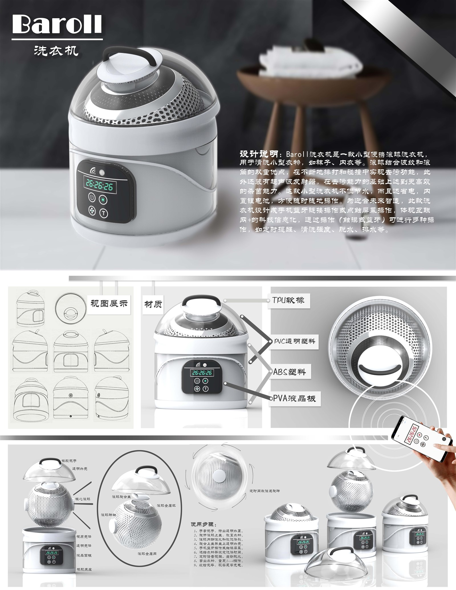

01
Baroll 便携滚珠洗衣机
PORTABLE ROLLER WASHER一台只在"洗的那一瞬间"才需要体积的洗衣机。把洗涤单元从机身里拆出来，是这个小产品最关键的一次结构判断。
- 品类
- 便携式小型洗衣机
- 场景
- 宿舍 / 租房 / 差旅，洗涤袜子与内衣
- 材料
- ABS 主体 · TPU 软胶 · PVC 透明件 · PVA 液晶板
- 交互
- 机身触控 + 手机物联（模式 / 温度 / 脱水 / 排水 / 定时）
设计判断
小件衣物的痛点是"不值得开一次大洗衣机"，而不是"洗不干净"。
一、把体积拆成两层。洗涤球可拆卸、可独立清洗，机身只承担驱动与收纳——机器不需要一直"是个桶"。
二、用滚珠代替搅拌。滚珠拍打与揉搓形成物理洗涤，减少用水与衣物缠绕，也更适合内衣这类不能强力搅动的织物。
三、把交互移出机身。机身只留最少按键与一块小屏，模式、水温、脱水与排水定时交给手机——这是"物联"在这个价位段唯一说得通的理由。
